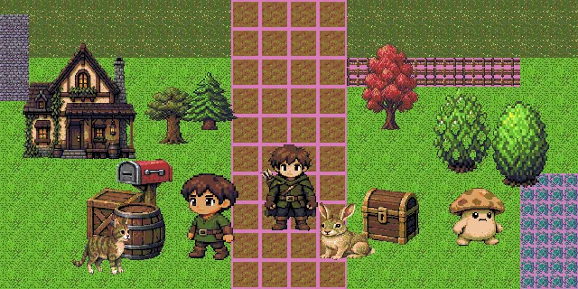

NEW GAME
assetrizz
Search 14,641 original 2D game assets and compose scenes beside the Hermes agent.
14,641 original PNGs · 23 style packs · about 1.65 GB
EXAMPLE SCENE · pixel_32

STORY SO FAR
assetrizz pairs a Hermes plugin with an original 2D game-asset library: 14,641 PNGs across 23 style packs, pinned at mojomast/assetrizz v0.1.0. The plugin ships a 15 MB scannable catalog and two compact tools, assetrizz_search and assetrizz_scene. Ask for a meadow, a ranger or a roadside inn: the agent searches the catalog, places tiles and props, and renders a PNG you can preview in a dark Desktop pane.
The art itself stays out of your plugins folder. Single PNGs are fetched on demand from the pinned tag, SSRF-guarded and SHA-256 verified. A bulk download is something only you can start.
SELECT STAGE compose-v2 templates
- STAGE 1
topdown_farming - STAGE 2
topdown_shooter - STAGE 3
dungeon_crawler - STAGE 4
side_platformer
ITEMS
Two compact tools, a dark Desktop compose pane, and a 15 MB scannable catalog
v0.2.0 compose-v2:
assetrizz_sceneop=composecompiles a compact signed scene spec into a placed sceneFour gameplay templates:
topdown_farming,topdown_shooter,dungeon_crawler, andside_platformerLayer lint for collisions, HUD/playfield overlap, and off-canvas placement
On-demand fetches of single PNGs from the pinned library tag, SSRF-guarded and SHA-256 verified
Bulk library download is user-initiated only (pane button or CLI), not a model tool
QUEST LOG
Quest 1. Ask the agent for a meadow, a ranger, or a roadside inn; it searches the catalog, places tiles and props, and renders a PNG
Quest 2. Live-preview the current scene in the dark Assetrizz Desktop pane on Hermes 0.23 or newer
Quest 3. Compose a top-down farming, top-down shooter, dungeon crawler, or side-platformer scene from a compact signed spec (compose-v2)
Quest 4. Lint a layout for collisions, HUD/playfield overlap, or off-canvas placement before you export
Quest 5. Keep the 1.65 GB art tree out of the plugins folder: install only the plugin repo (or, for the older layout, mojomast/assetrizz/plugin)
Quest 6. Download chosen style packs yourself when you want a local library; the agent cannot start a bulk download
CUTSCENE the posted demo
STATUS
- agent tools
- 2
- o200k schema tokens
- 970
- tests passed
- 93
- original PNGs in the library
- 14,641
- style packs
- 23
- submission video
- 3:00
- release
- v0.2.0
v0.2.0 release notes: 93 tests passed. hermes plugins validate --install-deps and hermes plugins doctor --ci are green. v0.2.0 release notes: combined tool-schema cost is 970 tokens on o200k_base (was 931; +39, within the +80 cap).
INVENTORY screenshots
Example scene: a pixel_32 meadow path with an inn, trees, a ranger, and a hare. Scene composition before and after: same assets, named layers, a grid ground plane, y-sort, reserved HUD docks. Ciderlatch, a composed top-down farming scene with HUD, quest card and hotbar. Ciderlatch scene before and after compose-v2. Heliox Yard, a composed dark sci-fi scene with HUD, minimap and comms bar. Heliox Yard scene before and after compose-v2. Storyboard sheet of the demo film, from One asset to 14,641 original game assets and 23 visual languages. Assetrizz: a dark catalog of original 2D game assets for Hermes.
SAVE FILE · INSTALL
hermes plugins install mojomast/assetrizz-hermes --ref e710b89c276b210969bebd67db4f1c855541586a
hermes plugins enable assetrizz--ref takes a 40-character commit SHA, not a tag name. Skill id: assetrizz:assetrizz-composer. The two tools still run when the Desktop pane is unavailable. Library PNGs are pinned to mojomast/assetrizz tag v0.1.0 (commit 05339c228f55ac95ad21b5c947db0c6e36207cd4).